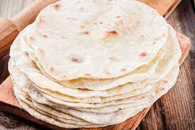

Tortilla

Description
Recipe for 16/20 tortillas for tacos
Ingredients
- 3 cups of all-purpose flour
- 1 tsp of salt
- 1/3 cups of olive oil
- 1 cup of warm water
Steps
- Combine flour, salt and baking powder in a medium-size bowl. Using a sturdy silicone spatula or a sturdy wooden spoon, mix dry ingredients until well combined.
- Make a well in the center of the dry ingredients and add the oil and water. Stir well from the bottom up, until all dry ingredients are incorporated and the dough begins to come together and form a shaggy ball.
- Turn dough out onto a lightly floured work surface and knead for 1-2 minutes until the dough is nice and smooth.
- Transfer dough to a lightly floured work surface. Divide into 16/20 equal portions.
- Turn each piece to coat with flour. Form each piece into a ball and flatten with the palm of your hand.
- Cover flattened balls of dough with a clean kitchen towel and allow to rest for at least 15 minutes (or as much as 2 hours) before proceeding.
- After the rest period, heat a large pan over medium heat. Roll each dough piece into a rough circle, about 15 cms in diameter, keep work surface and rolling pin lightly floured.
- When the pan is hot, place one dough circle into the pan and allow to cook 45 seconds to 1 minute or until the bottom surface has a few pale brown spots and the uncooked surface is bubbly. Flip to other side and cook for 15-20 seconds. The tortillas should be nice and soft but have a few small brown spots on the surface.
- Remove from pan with tongs and stack in a covered container or zippered bag to keep the tortillas soft.